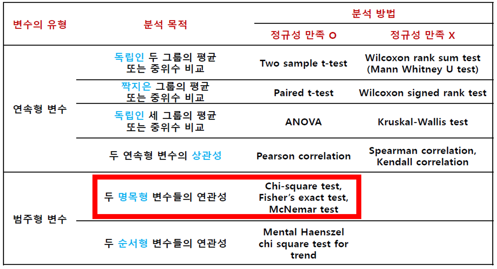
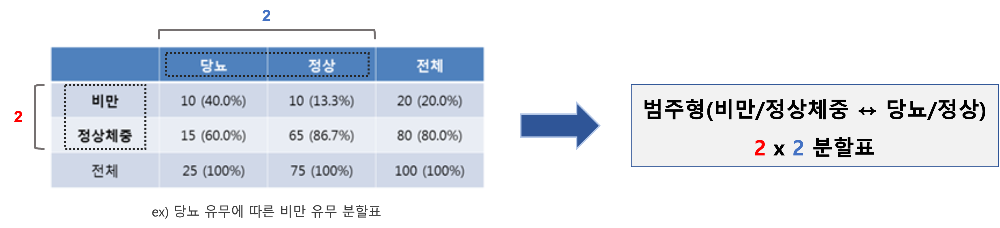
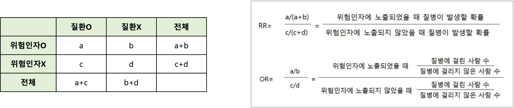
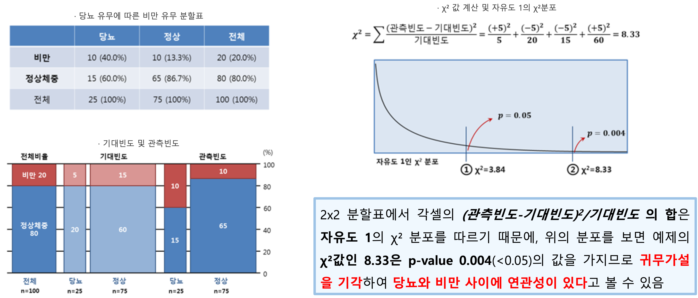
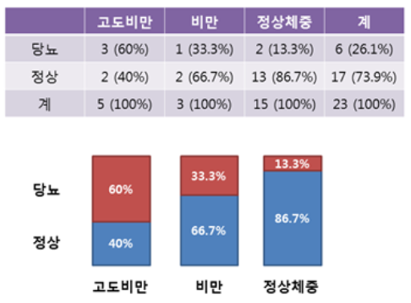

Chapter 5 비율을 비교하는 방법
- 자료의 유형에 따른 분석 방향

5.1 범주형 변수에 대한 접근
Ex) 질환의 유무(O/X), 치료반응(완치/부분적 반응/반응 없음), 질환의 중증도(경증/중등도/중증)
분할표(contingency table)
- 독립변수와 종속변수가 모두 범주형 변수인 경우 사용가능
- 범주의 개수에 따라 \(X \times Y\)(X, Y는 2이상의 정수) 형태로 작성 가능하며, 각 칸을 셀(cell)이라고 부름

5.1.1 두 범주형 자료의 연관성
두 범주형 자료의 연관성 비교방법으로는 상대위험도(relative ratio)와 교차비(odds ratio) 등이 존재
상대위험도(ㄱrelative ratio, RR)
- 코호트 연구에서 주로 사용
교차비(odds ratio, OR)
- 오즈비나 승산비 라고도 하며, 환자-대조군 연구에서 주로 사용
- \(2 \times 2\)로 표현된 분할표에서 두 변수의 연관성 척도로 사용하며, 셋 이상으로 구분된 범주에서는 사용하지 않음

5.1.2 교차분석
두 범주형 자료의 연관성의 유의성을 비교하는 방법으로 카이제곱 검정과 Fisher의 정확한 검정을 주로 사용
카이제곱 검정(chi-square test)과 Fisher의 정확한 검정(Fisher’s exact test)의 가설
- 귀무가설: 두 변수는 연관성이 없다
- 대립가설: 두 변수는 연관성이 있다.
용어
- 관측빈도: 실제로 조사에 의해 관찰된 빈도
- 기대빈도: 두 변수 사이에 연관성이 없다는 가정하에 예상되는 빈도
자유도
- 카이제곱(\(\chi^2\)) 분포의 자유도는 경우에 따라 변하며, 일반적으로 \(X \times Y\) 자료에서 \((X-1) \times (Y-1)\)의 자유도를 가짐
카이제곱 검정 예제

5.1.4 선형 대 선형 결합(linear by linear association)
\(2\times K\) 분할표에서 독립변수(\(K\))가 세 가지 이상의 범주로 분류되는 순위척도의 경우
독립변수의 순위 증가에 따른 종속변수의 비율 증가/감소 경향을 분석
Score test for trend, Cochran Armitage test도 경향분석 방법으로 사용가능
\(\chi^2\) 분포를 이용하지 않기 때문에, 셀의 기대빈도 제한 없음
선형 대 선형 결합 가설(당뇨 예제)
- 귀무가설: 비만도와 관계없이 당뇨의 비율은 일정하다.
- 대립가설: 비만도가 증가할수록 당뇨의 비율은 증가/감소 추세가 있다.

5.2 R 예제
5.2.1 카이제곱 검정
5.2.1.1 데이터 불러오기
DMdata = read.csv('data/5_chi_square_test.csv',header=T)
#자료 확인, obesity=비만(1)/정상체중(2), diabetes=당뇨(1)/정상(2)#
#2x2 비만과 당뇨 분할표로 표현가능#
#View(DMdata)5.2.1.3 데이터값 이름변경
DMdata$obesity <- recode(DMdata$obesity,"1='비만';2='정상체중'")
DMdata$diabetes <- recode(DMdata$diabetes,"1='당뇨';2='정상'")
#View(DMdata)5.2.1.4 분할표 만들기, xtabs
#DM data 내의 변수를 편하게 이용하기 위해 attach함수 사용#
attach(DMdata)
DMtable = xtabs(~obesity+diabetes)
DMtable## diabetes
## obesity 당뇨 정상
## 비만 10 10
## 정상체중 15 655.2.1.5 분할표 만들기, table
DMtable2 = table(obesity,diabetes)
DMtable2## diabetes
## obesity 당뇨 정상
## 비만 10 10
## 정상체중 15 655.2.1.6 기대빈도 계산 및 카이제곱 검정
#p-value 0.00387로 귀무가설 기각 -> 비만과 당뇨는 연관성이 있음#
chisq.test(DMtable2)$expected## diabetes
## obesity 당뇨 정상
## 비만 5 15
## 정상체중 20 60chisq.test(DMtable2)##
## Pearson's Chi-squared test with Yates' continuity correction
##
## data: DMtable2
## X-squared = 6.75, df = 1, p-value = 0.009375detach(DMdata)5.2.2 Fisher의 정확 검정
5.2.2.1 데이터 불러오기
DMdata = read.csv('data/5_fisher_exact_test.csv',header=T)
#자료 확인, obesity=비만(1)/정상체중(2), diabetes=당뇨(1)/정상(2), NA존재#
#2x2 비만과 당뇨 분할표로 표현가능#
#View(DMdata)5.2.2.2 데이터값 이름변경
DMdata$obesity <- recode(DMdata$obesity,"1='비만';2='정상체중'")
DMdata$diabetes <- recode(DMdata$diabetes,"1='당뇨';2='정상'")
attach(DMdata)5.2.2.3 분할표 만들기
DMtable=xtabs(~obesity+diabetes)
DMtable## diabetes
## obesity 당뇨 정상
## 비만 2 2
## 정상체중 3 135.2.2.4 기대빈도출력 후 카이제곱 검정
#빈도수가 작아 검정시 경고메세지 발생#
chisq.test(DMtable)$expected## Warning in chisq.test(DMtable): Chi-squared approximation may be incorrect## diabetes
## obesity 당뇨 정상
## 비만 1 3
## 정상체중 4 12chisq.test(DMtable)## Warning in chisq.test(DMtable): Chi-squared approximation may be incorrect##
## Pearson's Chi-squared test with Yates' continuity correction
##
## data: DMtable
## X-squared = 0.41667, df = 1, p-value = 0.51865.2.2.5 Fisher의 정확성 검정
#p-value 0.2281로 귀무가설 기각 불가 -> 비만과 당뇨는 연관성이 없음#
fisher.test(DMtable)##
## Fisher's Exact Test for Count Data
##
## data: DMtable
## p-value = 0.2487
## alternative hypothesis: true odds ratio is not equal to 1
## 95 percent confidence interval:
## 0.2088683 77.8897313
## sample estimates:
## odds ratio
## 3.955176detach(DMdata)5.2.3 Cochran Armitage trend test
5.2.3.2 데이터값 이름변경
DMdata$obesity <- recode(DMdata$obesity,"1='고도비만';2='비만';3='정상체중'")
DMdata$diabetes <- recode(DMdata$diabetes,"1='당뇨';2='정상'")
attach(DMdata)5.2.3.3 분할표 만들기
DMtable = xtabs(~obesity+diabetes)
DMtable## diabetes
## obesity 당뇨 정상
## 고도비만 3 2
## 비만 1 2
## 정상체중 2 135.2.3.5 Cochran Armitage trend test
#DMtable[,1]은 체중별 당뇨환자그룹 -> DMtable의 1열#
#margin.table(DMtable,margin=1)은 고도비만/비만/정상체중 그룹별 총 인원수(margin=1은 행방향,2는 열방향#
#p-value 0.03778로 귀무가설 기각 -> 비만도가 증가할수록 당뇨의 비율은 증가 추세가 있음#
prop.trend.test(x=DMtable[,1],n=margin.table(DMtable,margin=1))##
## Chi-squared Test for Trend in Proportions
##
## data: DMtable[, 1] out of margin.table(DMtable, margin = 1) ,
## using scores: 1 2 3
## X-squared = 4.315, df = 1, p-value = 0.03778detach(DMdata)